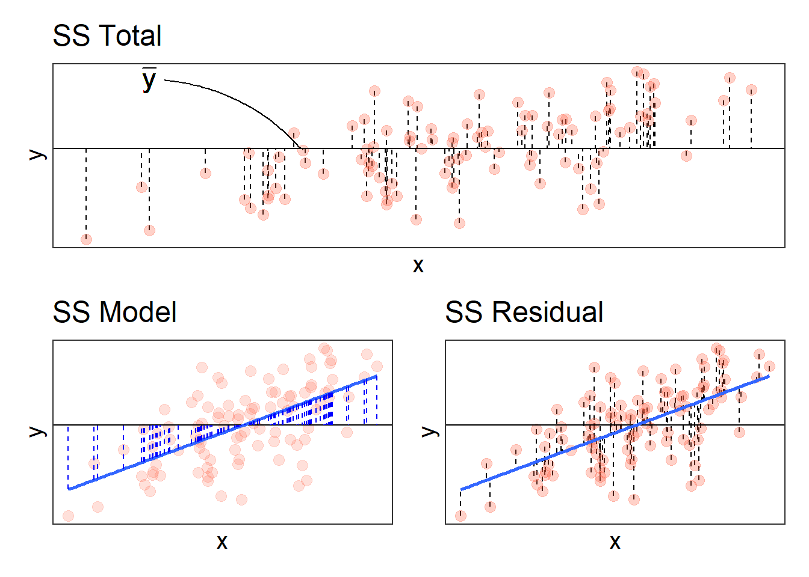
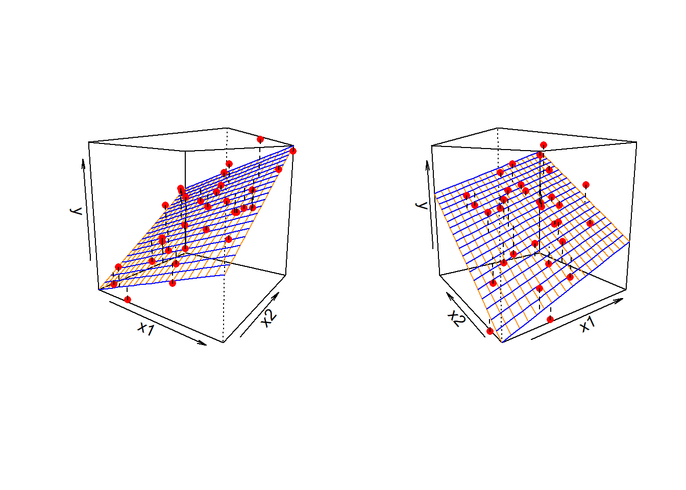
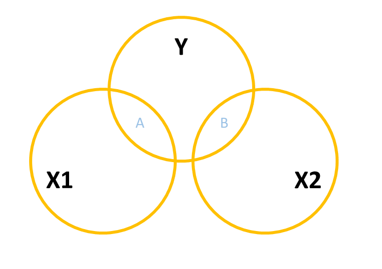
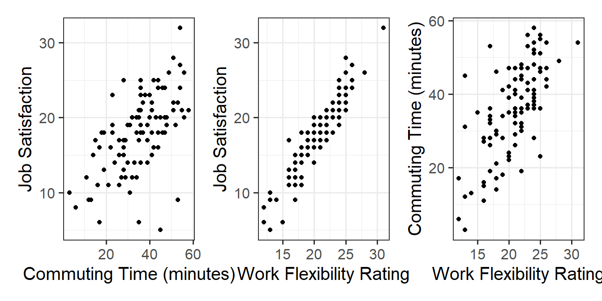
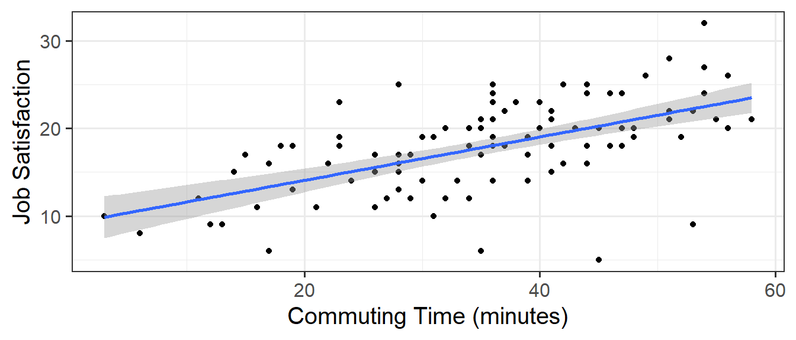
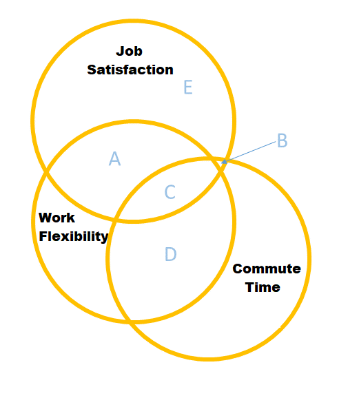
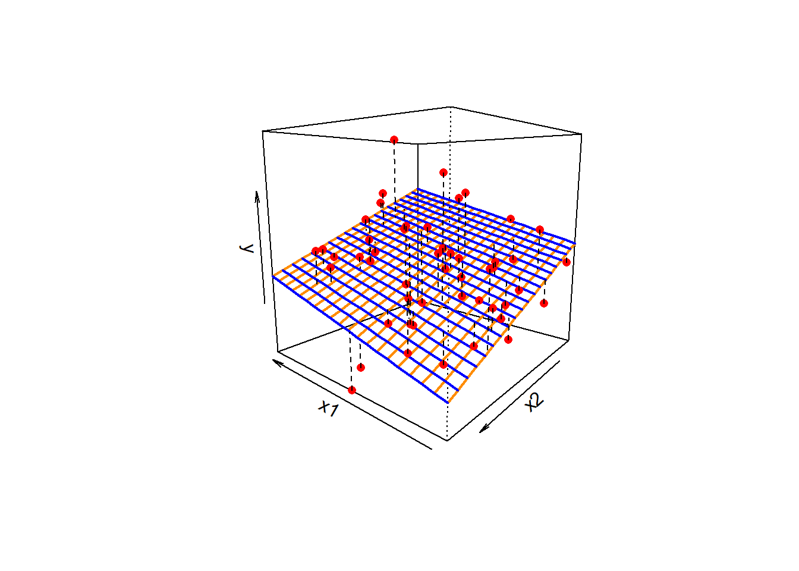
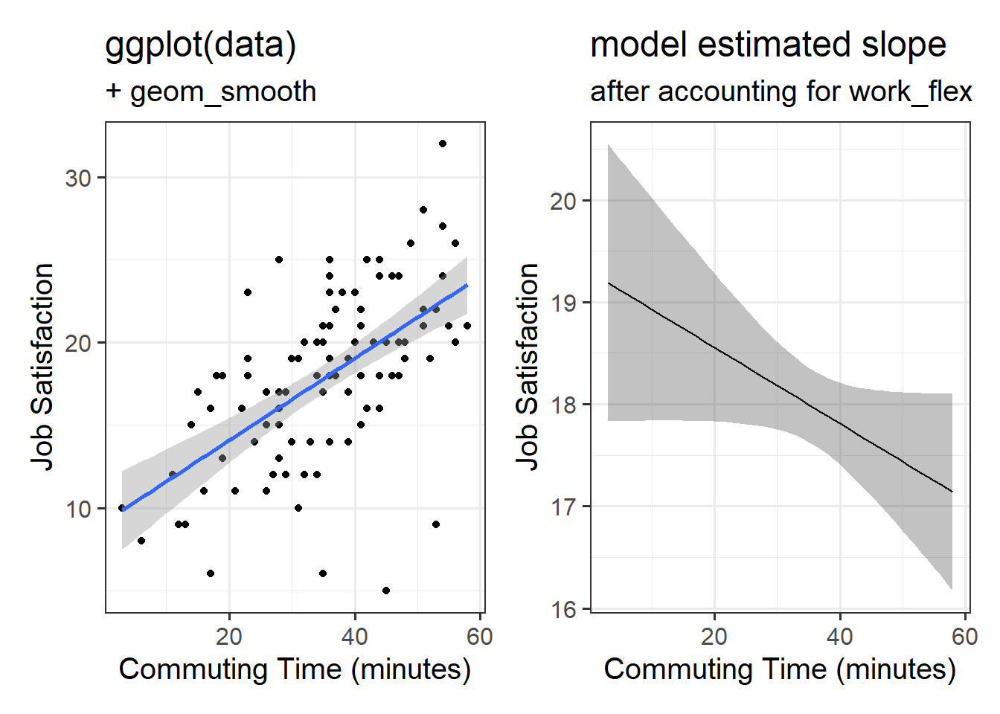

Multiple regression: Building models where more than one thing explains variance
Comparing models
Associations in multiple regression
When we introduced the linear regression model (see Chapter 10), we talked mainly about the intercept and the slope (collectively referred to as “the coefficients”). We saw that the model summary output (from summary(model)) gave us some tests next to each coefficient:
slr_data <-read_csv("https://uoepsy.github.io/data/usmr_slr.csv")simplemod <-lm(y ~ x, data = slr_data)summary(simplemod)
Call:
lm(formula = y ~ x, data = slr_data)
Residuals:
Min 1Q Median 3Q Max
-2.4383 -0.6593 0.1075 0.5945 2.1867
Coefficients:
Estimate Std. Error t value Pr(>|t|)
(Intercept) 1.54277 0.32005 4.820 5.24e-06 ***
x 0.77952 0.09959 7.827 5.92e-12 ***
---
Signif. codes: 0 '***' 0.001 '**' 0.01 '*' 0.05 '.' 0.1 ' ' 1
Residual standard error: 0.9308 on 98 degrees of freedom
Multiple R-squared: 0.3847, Adjusted R-squared: 0.3784
F-statistic: 61.26 on 1 and 98 DF, p-value: 5.918e-12
However, there is another way we can look at our regression model, and that is by considering how the model, as a whole, explains variation in our outcome model.
Variance Explained in Simple Regression
To quantify and assess a model’s utility in explaining variance in an outcome variable, we can split the total variability of that outcome variable into two terms: the variability explained by the model plus the variability left unexplained in the residuals.
\[
\begin{align}
& \qquad \qquad \qquad \qquad \text{total variability in outcome } = \\
& \text{variability explained by model } + \text{unexplained variability in residuals}
\end{align}
\]
The illustration in Figure 1 gets at the intuition behind this: the top panel shows the total variability in the outcome variable \(y\) - for each datapoint we see the distance from the mean of \(y\). These distances can be split into the bit from the mean to the model predicted value (seen in the bottom left panel of Figure 1), and the bit from that value to the actual value (bottom right panel).

Figure 1: Total Sums of Squares = Model Sums of Squares + Residual Sums of Squares
Each of these terms can be quantified as a ‘sum of squares’ (i.e. summing the squared differences). For the ‘total sums of squares’, this is the sum of squared differences from each observation to the mean. For the ‘model sums of squares’, this is the sum of the squared differences from each model-predicted value to the mean. For the ‘residual sums of squares’, it is the sum of the squared differences from each observation to the relative model-predicted value.
A useful statistic is the \(R^2\), which tell us the proportion of the total variability in the outcome (y) that is explained by the linear relationship with the predictor (x).
The \(R^2\) coefficient is defined as the proportion of the total variability in the outcome variable which is explained by our model: \[
R^2 = \frac{SS_{Model}}{SS_{Total}} = 1 - \frac{SS_{Residual}}{SS_{Total}}
\]
We can find the \(R^2\) easily in the summary() of the model!
The output of summary() displays the R-squared value in the following line:
We can also perform a test to investigate if the model is ‘useful’ — that is, a test to see if our explanatory variable explains more variance in our outcome than we would expect by just some random chance variable.
Our test is framed in terms of the following hypotheses:
\[
\begin{aligned}
H_0 &: \text{the model is ineffective, } b_1 = 0 \\
H_1 &: \text{the model is effective, } b_1 \neq 0
\end{aligned}
\] The relevant test-statistic is the F-statistic, which uses “Mean Squares” (these are Sums of Squares divided by the relevant degrees of freedom). We then compare that against (you guessed it) an F-distribution! F-distributions vary according to two parameters, which are both degrees of freedom.
We won’t go into details of why we use \(F\), but the logic of the significance test is just the same as it was for \(z\), \(t\) and \(\chi^2\):
we calculate a test statistic
we have a distribution of what we would expect test statistics from a sample of this size to be, if the null hypothesis is true (the “null distribution”).
we can then ask how unlikely it is that we would observe our statistic (or more extreme) if the null hypothesis were true.
This is a comparison between amount of variation in the outcome explained by the model and the amount of variation ‘explained by’ (or leftover in) the residuals.
The sample F-statistic is compared to an F-distribution with \(df_{1} = 1\) and \(df_{2} = n - 2\) degrees of freedom.1
Like the R-squared, the summary() of our model prints out the F-statistic, degrees of freedom, and p-value. These are right at the bottom of the summary output, printed as:
...
Coefficients:
Estimate Std. Error t value Pr(>|t|)
(Intercept) 1.54277 0.32005 4.820 5.24e-06 ***
x 0.77952 0.09959 7.827 5.92e-12 ***
---
Signif. codes: 0 ‘***’ 0.001 ‘**’ 0.01 ‘*’ 0.05 ‘.’ 0.1 ‘ ’ 1
Residual standard error: 0.9308 on 98 degrees of freedom
Multiple R-squared: 0.3847, Adjusted R-squared: 0.3784
F-statistic: 61.26 on 1 and 98 DF, p-value: 5.918e-12
The F-test of model utility was significant (\(R^2=0.38, F(1,98) = 61.26,\ p <.001\)), suggesting that predictor \(x\) is effective in explaining variance in the outcome.
Note that the p-value here is exactly the same as the one for the coefficient. This is because in testing “the model is (in)effective”, the “model” is really only the relationship between the outcome and our one predictor. We’re about to start adding more explanatory variables into our model, which means that our hypotheses for the \(F\)-test will be about a set of \(b\)’s, and so the tests will be of different things.
optional: with only one predictor variable, the F-test is equivalent to the t-test of the slope
In simple linear regression only (where we have just one predictor), the F-statistic for overall model significance is equal to the square of the t-statistic for \(H_0: b_1 = 0\).
You can check that the squared t-statistic is equal, up to rounding error, to the F-statistic:
slr_data <-read_csv("https://uoepsy.github.io/data/usmr_slr.csv")simplemod <-lm(y ~ x, data = slr_data)summary(simplemod)$fstatistic['value']
We can also show the equivalence of the F-test for model effectiveness and t-test for the slope through their respecive formulae.
Recall the formula of the sum of squares due to the model. We are going to re-express this in an equivalent form below: \[
\begin{aligned}
SS_{Model} &= \sum_i (\hat y_i - \bar y)^2 \\
&= \sum_i (\hat b_0 + \hat b_1 x_i - \bar y)^2 \\
&= \sum_i (\bar y - \hat b_1 \bar x + \hat b_1 x_i - \bar y)^2 \\
&= \sum_i (\hat b_1 (x_i - \bar x))^2 \\
&= \hat b_1^2 \sum_i (x_i - \bar x)^2
\end{aligned}
\]
The F-statistic is given by: \[
\begin{aligned}
F = \frac{SS_{Model} / 1}{SS_{Residual} / (n - 2)}
= \frac{\hat b_1^2 \sum_i (x_i - \bar x)^2}{\hat \sigma^2}
= \frac{\hat b_1^2 }{\hat \sigma^2 / \sum_i (x_i - \bar x)^2}
\end{aligned}
\]
Now recall the formula of the t-statistic, \[
t = \frac{\hat b_1}{SE(\hat b_1)} = \frac{\hat b_1}{\hat \sigma / \sqrt{\sum_i (x_i - \bar x)^2}}
\]
It is evident that the latter is obtained as the square root of the former.
optional: expressing \(F\) in terms of \(R^2\)
With some algebra we can also show that: \[
F = \frac{R^2 / 1}{(1 - R^2) / (n - 2) } = \frac{R^2 / df_{Model}}{(1 - R^2) / df_{Residual} }
\]
The real power of regression models comes into effect when we start to concern ourselves with more than just “one outcome explained by one predictor”.
Enter… \(x_2\)!
We’re going to start with looking at the case of “one outcome, two predictors”, but the beauty of this is that the logic scales up to however many predictor variables we want to include in our model.
When we fitted the simple regression model with one predictor: \[
y = b_0 + b_1 \cdot x + \epsilon
\] we were fitting a line to a scatterplot of points that we plotted in 2 dimensions (an x-axis and a y-axis).
When we fit a multiple regression model with two predictors: \[
y = b_0 + b_1 \cdot x_1 + b_2 \cdot x_2 + \epsilon
\] we are fitting a surface (or “plane”) to a 3-dimensional cloud of datapoints (Figure 2). There are three dimensions: x1, x2, and y.

Figure 2: Regression surface for y~x1+x2, from two different angles
Don’t worry about trying to figure out how to visualise it if we had more predictors! We can only conceive of 3 spatial dimensions.2 However, the logic stays the same when we increase this to having \(k\) predictors, but we have a model that is a \(k\)-dimensional surface, and each coefficient is the angle of that surface with respect to each predictor.
When we have two predictors, such as in the visualisation of Figure 2, our model is now determined by three numbers:
the intercept, denoted \(b_0\).
This is the point at which the plane hits the y-axis (i.e. where \(x_1=0\)and\(x_2=0\))
the slope of x1, in this case denoted \(b_1\).
This is the angle of the regression plane with respect to the axis of \(x_1\). It is the amount which the plane increases for every 1 increase in \(x_1\).
the slope of x2, in this case denoted \(b_2\).
This is the angle of the regression plane with respect to the axis of \(x_2\). It is the amount which the plane increases for every 1 increase in \(x_2\).
Fitting Multiple Regression Models in R
As we did for simple linear regression, we can fit our multiple regression model using the lm() function. We can add as many explanatory variables as we like, separating them with a +.
And we can use all the same functions that we have already seen such as summary(), predict(), fitted(), coef() etc.
mlr_data <-read_csv("https://uoepsy.github.io/data/usmr_mlr.csv")model2 <-lm(y ~ x1 + x2, data = mlr_data)summary(model2)
Call:
lm(formula = y ~ x1 + x2, data = mlr_data)
Residuals:
Min 1Q Median 3Q Max
-16.5201 -4.2912 -0.0268 3.3044 16.2154
Coefficients:
Estimate Std. Error t value Pr(>|t|)
(Intercept) -2.39138 3.67735 -0.650 0.51867
x1 0.17570 0.06435 2.730 0.00888 **
x2 -0.64756 0.19959 -3.244 0.00217 **
---
Signif. codes: 0 '***' 0.001 '**' 0.01 '*' 0.05 '.' 0.1 ' ' 1
Residual standard error: 7.069 on 47 degrees of freedom
Multiple R-squared: 0.2643, Adjusted R-squared: 0.233
F-statistic: 8.443 on 2 and 47 DF, p-value: 0.0007369
Just like we saw for the regression model with one predictor, the summary() output of a multiple regression model shows us all the same information: residuals, coefficients, \(R^2\) and and \(F\)-test. We’ll get to the coefficients a little later on, but first we’re going to take a look at the overall model in terms of how much variance is now explained.
Variance Explained in Multiple Regression
The Adjusted \(R^2\)
We know from above that in simple linear regression the R-squared can be obtained as: \[
R^2 = \frac{SS_{Model}}{SS_{Total}} = 1 - \frac{SS_{Residual}}{SS_{Total}}
\]
In multiple regression, the “multiple \(R^2\)” uses this exact same formula. However, when we add more and more predictors into a multiple regression model, \(SS_{Residual}\)cannot increase. In fact, it will always decrease, regardless of how useful our new predictors are. This means that \(R^2\) will always increase (because \(SS_{Total}\) is constant, so \(1-\frac{SS_{Residual}}{SS_{Total}}\) will increase as \(SS_{Residual}\) decreases).
If we added randomly generated 1000 new predictors (completely random, so they have nothing to do with the outcome), then by chance alone they will explain some variance in the outcome \(y\), and the multiple \(R^2\) will always increase.
An alternative, the “Adjusted-\(R^2\)”, does not necessarily increase with the addition of more explanatory variables, by the inclusion of a penalty according to the number of explanatory variables in the model. The number by itself isn’t directly meaningful, but can be useful in determining the amount of additional variance explained by adding predictor(s) into a model.
The Adjusted\(R^2\) is a measure of the proportion of variability in the outcome that is explained by our model, adjusted for the number of predictors in the model.
\[
\begin{align}
& Adjusted{-}R^2=1-\frac{(1-R^2)(n-1)}{n-k-1} \\
& \quad \\
& \text{Where:} \\
& n = \text{sample size} \\
& k = \text{number of explanatory variables} \\
\end{align}
\]
In R, we can view both the mutiple and adjusted \(R^2\) at the bottom of the output of summary():
model2 <-lm(y ~ x1 + x2, data = mlr_data)summary(model2)
The \(F\)-statistic: a joint test
We saw just above that with one predictor, the F-statistic is used to test the null hypothesis that the regression slope for that predictor is zero. In multiple regression, the logic is the same, but we are now testing against the null hypothesis that all regression slopes are zero (now that we have multiple predictors, “all” is more than 1).
\[
\begin{aligned}
H_0: & \text{the model is ineffective, } \\
& b_1, ..., b_k = 0 \\
H_1: &\text{the model is effective, } \\
& \text{any of }b_1, ..., b_k \neq 0
\end{aligned}
\]
The \(F\)-statistic is sometimes called the \(F\)-ratio because it is the ratio of the how much of the variation is explained by the model (per parameter) versus how much of the variation is unexplained (per remaining degrees of freedom). We can generalise the formula for the \(F\)-statistic in simple regression that we saw above, to encompass situations where there are more predictors:
In R, at the bottom of the output of summary(), you can view the F statistic, along with the hypothesis test against the null hypothesis that all the coefficients are 0:3
model2 <-lm(y ~ x1 + x2, data = mlr_data)summary(model2)
the linear model with \(x1\) and \(x2\) explained a significant amount of variance in \(y\) beyond what we would expect by chance (\(R^2=0.26, F(2, 47) = 8.44,\ p <.001\)).
Model Comparisons
Now we have seen that we can add in more predictors to a linear regression model, what are we going to do with our modelling? Well, one useful thing we can do is to compare models with and without some predictor(s).
An easy starting point would be to compare how the \(R^2\) values change when we add predictors - showing the extent to which different models ‘explain variance’ in our outcome. The two models below explain 10% and 26%, respectively, of the variance in y.
model1 <-lm(y ~ x1, data = mlr_data)model2 <-lm(y ~ x1 + x2, data = mlr_data)summary(model1)$r.squared
[1] 0.09953216
summary(model2)$r.squared
[1] 0.2643057
But this comparison is descriptive, in that we are not performing any test of whether the differences between the models’ explanatory power is more than we might just expect by chance. To do this, we need to utilise our \(F\)-tests again!
As it happens, the \(F\)-statistic we see at the bottom of summary(model) is actually a comparison between two models: our model (with some explanatory variables in predicting \(y\)) and the null model.
the null model / “intercept-only model”
The null model can be thought of as the model in which all explanatory variables have zero regression coefficients. Put another way, when all predictor variable coefficients are zero, then we are only estimating \(y\) via an intercept (which will be the mean: \(\bar y\)).
nullmod <-lm(y ~1, data = mlrdata)
We aren’t limited to comparing our model to the null model. We can compare any the intermediate models which vary in the complexity, from the null model to our full model.
If (and only if) two models are nested (one model contains all the predictors of the other and is fitted to the same data), we can compare them using an incremental F-test. This is a formal test of whether the additional predictors provide a better fitting model. “Better fitting” here refers to a reduction in the residual sums of squares, hence why this is just another form of the \(F\)-ratio we’ve seen above.
Incremental F-test
\(H_0:\) coefficients for the added/ommitted variables are all zero.
\(H_1:\) at least one of the added/ommitted variables has a coefficient that is not zero.
optional: F-ratio written for model comparison
The F-ratio for comparing the residual sums of squares between two models can be written as:
\[
\begin{align}
& F_{(df_R-df_F),df_F} = \frac{(SSR_R-SSR_F)/(df_R-df_F)}{SSR_F / df_F} \\
& \quad \\
& \text{Where:} \\
& SSR_R = \text{residual sums of squares for the restricted model} \\
& SSR_F = \text{residual sums of squares for the full model} \\
& df_R = \text{residual degrees of freedom from the restricted model} \\
& df_F = \text{residual degrees of freedom from the full model} \\
\end{align}
\]
In R, we can conduct an incremental F-test to compare two models by fitting both models using lm(), and passing them to the anova() function:
If we wanted to, for example, compare a model with just one predictor, \(x_1\), to a model with 3 predictors: \(x_1,\ x_2,\ x_3\), we can assess the extent to which the variables \(x_2\) and \(x_3\)jointly improve model fit by explaining more variance (i.e. by reducing the residual sums of squares):
model1 <-lm(y ~ x1, data = mlr_data)model3 <-lm(y ~ x1 + x2 + x3, data = mlr_data)anova(model1, model3)
Analysis of Variance Table
Model 1: y ~ x1
Model 2: y ~ x1 + x2 + x3
Res.Df RSS Df Sum of Sq F Pr(>F)
1 48 2874.8
2 45 2294.3 3 580.55 3.7956 0.01648 *
---
Signif. codes: 0 '***' 0.001 '**' 0.01 '*' 0.05 '.' 0.1 ' ' 1
\(x2\) and \(x3\) explained a significant amount of additional variance in \(y\) beyond \(x1\) (\(F(3,45) = 3.8,\ p =.017\)).
Associations in multiple regression
Okay, so we can build multiple regression models, adding in as many predictors as we like, and we can compare models with and without certain predictors. But why is this a useful thing that we may want to do?
One important reason is that it allows us to exercise statistical control. We often conduct research where we are interested mainly in one relationship, but we know that there are other things also at play - there are other variables that will probably strongly influence results if they aren’t held constant.
Statistical control allows us to examine the relationship of interest after accounting for variance explained by other predictors. Including additional predictors also often has the benefit of improving the predictive accuracy of our model (although this is not often the primary goal in Psychological studies, which are less concerned with ‘the best fitting model’ and more geared towards understanding and estimating the relevant relationship while exercising appropriate control).
Multiple regression allows to do this because when we have multiple predictor variables in our model, we can examine the association between the outcome \(y\) and the bit of our focal predictor variable that is unique from the other predictors (i.e. “after accounting for” those other predictors).
For example, suppose we are interested in the relationship between ‘commuting time’ and ‘job satisfaction’ (e.g. people might be more/less satisfied with jobs depending upon the distance of their commute). In this scenario, we are looking at whether our outcome (job satisfaction) varies according to a focal predictor (the distance of commute). But, it’s extremely likely that people with more flexible working patterns will tend to have longer commutes (they will spend more time at home, and so be more prepared to travel further on the days they do go in). And this flexible working has other features that will influence job satisfaction. So we need to make it clear that we are interested in the bit of ‘commuting time’ that is separate from ‘work flexibility’ - we want to control for work flexibility.
Terminology
As with all areas of statistics, people seem to use lots of different terms here. It can be confusing!
outcome/response/dependent variable: variable on the left hand side of the model equation (thing that varies and we’re trying to explain how/why)
predictor: any variable on the right hand side of the model equation (things that we thing explain differences in the outcome)
focal predictor/independent variable: the predictor of interest
covariates/confounders/control variables: other variables that we are less interested in but believe to be relevant to how the data comes about, and that may influence both the outcome and the focal predictor.
One way to build this intuition is to consider a Venn diagram with a circle showing the variance in each variable. Figure 3 shows a simple linear regression with one predictor (i.e. lm(y ~ x1)). The circle for \(y\) shows the total variance in \(y\) (the same for the \(x_1\) circle). The overlap between circles (labelled “A”) shows the variance in \(y\) that is explained by \(x_1\) (i.e. the covariance).
Figure 3: Venn Diagram for Simple Regression y ~ x1
When we add in a new predictor, \(x_2\), where do we add it? If \(x_1\) and \(x_2\) are completely uncorrelated with one another, then it would look something like Figure 4, where there is no overlap between the \(x_1\) and \(x_2\) circles. The total variance explained in \(y\) by both predictors is \(A + B\), and in this case, nothing changes in our estimate of the relationship between \(y\) and \(x_1\). It’s just the same as before (the area labelled “A” is the same in both Figure 3 and Figure 4).

Figure 4: Venn Diagram for Multiple Regression y ~ x1 + x2 where x1 and x2 are completely uncorrelated
However, in practice the predictors in our regression model are likely to overlap a bit (it’s hard to make sure our focal predictor is completely unrelated to other predictors). In this case, our Venn diagram is going to look like Figure 5. The correlation between \(x_1\) and \(x_2\) is shown by the overlap of those two circles (the area \(C + D\) in the diagram). The total variance explained in \(y\) is now separated into the areas \(A + B + C\) (and \(E\) is the unexplained variance - the residuals).
Areas \(A\) and \(B\) are no longer the same as in the previous diagrams - there’s a little bit (area \(C\)) that we don’t want to double count in its explanatory power as it can’t be attributable to specifically one variable or the other.
Figure 5: Venn Diagram for Multiple Regression y ~ x1 + x2 where x1 and x2 are somewhat correlated
\(A\) is the variance in \(y\)uniquely explained by \(x_1\)
\(B\) is the variance in \(y\)uniquely explained by \(x_2\)
\(C\) is the variance in \(y\) that is explained by both \(x_1\) and \(x_2\) but not attributable to either one uniquely.
We can map the model comparisons we talked about above to this diagram too. The model comparison below would allow us to ask whether the area \(B\) is explaining a significant amount of \(y\) (excluding the area \(A+C\)).
model1 <-lm(y ~ x1, data = mlr_data)model2 <-lm(y ~ x1 + x2, data = mlr_data)anova(model1, model2)
Example: Happy Commuters
We have a sample of 100 people who all completed a questionnaire that has given us measures of their job satisfaction (range 5-35, higher scores indicate more satisfaction), their average commuting time (in minutes), their work flexibility (range 5-35, with higher scores indicating more flexibility in working patterns).
We’re interested in estimating how length of commute is associated with differences in job satisfaction. However, we also have reason to believe that job satisfaction differs depending upon how flexible the working patterns are and that people on more flexible contracts tend to have longer commutes. So we want to isolate the differences in job satisfaction due to commuting from those due to work flexbility.
The toy dataset for our happy commuters example is at https://uoepsy.github.io/data/happycommute.csv. We can see plots of the different relationships in Figure 6. It looks from these like job satisfaction increases with longer commuting time, and also increases with more work flexibility. Note also that commuting time increases with more work flexibility.
Code
happycommute <-read_csv("https://uoepsy.github.io/data/happycommute.csv")library(patchwork)ggplot(happycommute, aes(x=commute,y=jobsat))+geom_point() +labs(x="Commuting Time (minutes)",y="Job Satisfaction") +ggplot(happycommute, aes(x=work_flex,y=jobsat))+geom_point() +labs(x="Work Flexibility Rating",y="Job Satisfaction") +ggplot(happycommute, aes(x=work_flex,y=commute))+geom_point() +labs(x="Work Flexibility Rating",y="Commuting Time (minutes)")

Figure 6: bi-variate relationships between each of Job Satisfaction, Commuting Time and Work Flexibility
If we fit a simple regression \(JobSat \sim b_0 + b_1(CommuteTime)\), we get a nice line, and our model is significant. The coefficient is positive suggesting to us that people who commute for longer are more satisfied with their jobs. Good news for me, it takes me 2 hours to get into work!
Plot
Code
ggplot(happycommute, aes(x=commute,y=jobsat))+geom_point() +geom_smooth(method=lm)+labs(x="Commuting Time (minutes)",y="Job Satisfaction")

Model summary
Code
lm(jobsat ~ commute, data = happycommute) |>summary()
Call:
lm(formula = jobsat ~ commute, data = happycommute)
Residuals:
Min 1Q Median 3Q Max
-15.2759 -2.6475 0.0467 2.9659 9.4927
Coefficients:
Estimate Std. Error t value Pr(>|t|)
(Intercept) 9.11847 1.29422 7.046 2.59e-10 ***
commute 0.24794 0.03425 7.240 1.02e-10 ***
---
Signif. codes: 0 '***' 0.001 '**' 0.01 '*' 0.05 '.' 0.1 ' ' 1
Residual standard error: 4.247 on 98 degrees of freedom
Multiple R-squared: 0.3485, Adjusted R-squared: 0.3418
F-statistic: 52.42 on 1 and 98 DF, p-value: 1.02e-10
But… what if the reason that we are seeing “more commuting >> more job satisfaction” is not because long commutes are enjoyable, but because the people who have longer commutes are those who tend to be in more flexible working patterns (and so are more satisfied in their work for a myriad of other reasons)?
When we compare two models, one with job satisfaction predicted by work flexibility, and one with job satisfaction predicted by both work flexibility and commuting time, we now conclude that commuting time is not a useful predictor..
jobmodel1 <-lm(jobsat ~ work_flex, data = happycommute)jobmodel2 <-lm(jobsat ~ work_flex + commute, data = happycommute)anova(jobmodel1, jobmodel2)
Analysis of Variance Table
Model 1: jobsat ~ work_flex
Model 2: jobsat ~ work_flex + commute
Res.Df RSS Df Sum of Sq F Pr(>F)
1 98 336.77
2 97 325.30 1 11.472 3.4209 0.06742 .
---
Signif. codes: 0 '***' 0.001 '**' 0.01 '*' 0.05 '.' 0.1 ' ' 1
Why? Because after we take into account how flexible peoples’ work is, knowing their commuting time doesn’t actually provide any new information about their job satisfaction.
If it helps, we might think of this model as the diagram in Figure 7. When we don’t have work flexibility in our model, then the estimated association between commuting time and job satisfaction is the areas \(B + C\). When we do have work flexibility in the model, the additional variance in job satisfaction explained uniquely by commuting time is just the tiny area \(B\) (not a useful amount).

Figure 7: lm(jobsat ~ work_flex + commute)
This example is a very extreme one where the relationship completely disappears. in real data associations tend to be more subtle/less clear cut. Including \(x_2\) may increase or decrease the association between \(y\) and \(x_1\), depending on the extent to which \(x_1\) and \(x_2\) are correlated.
optional: control on the front-end
If we haven’t collected the data yet, one good option is to control by design. This would involve trying to collect our data such that the predictor of interest is independent from other possibly confounding variables.
We could do this by randomisation, where we randomly allocate people to different levels of our focal predictor, meaning that other variables will not be related to the focal predictor. This is what a “randomized control trial” does, randomly allocating people to take drug X or a placebo means that the two groups should be similar in aspects such as age.
Alternatively, we could do achieve it by “case-matching”. This involves finding people at different levels of the focal predictor who match on possible confounders. For example, for every 60 year who takes drug X, we also collect data from a 60 year old who does not.
There are lots of different types of study design, and it is not something to be rushed through. Careful design can make for great science, and clever statistics cannot save a poorly designed study!
Shortcuts for model comparisons
Above we saw that we can compare two models by testing the reduction in residual sums of squares. To do this, we fitted each model and then gave both those models to the anova() function.
There are some shortcuts that will sometimes save us time, as they don’t involve fitting more than the one model.
Comparisons incrementally adding each predictor
Using the order in which predictors are entered into our model, we can set up a series of models that incrementally add each next predictor.
model0 <-lm(y ~1, data = mlr_data)model1 <-lm(y ~1+ x1, data = mlr_data)model2 <-lm(y ~1+ x1 + x2, data = mlr_data)model3 <-lm(y ~1+ x1 + x2 + x3, data = mlr_data)
We can then easily compare them by giving them all to the anova() function (which can take as many models as we want to give it).
anova(model0, model1, model2, model3)
Analysis of Variance Table
Model 1: y ~ 1
Model 2: y ~ 1 + x1
Model 3: y ~ 1 + x1 + x2
Model 4: y ~ 1 + x1 + x2 + x3
Res.Df RSS Df Sum of Sq F Pr(>F)
1 49 3192.6
2 48 2874.8 1 317.77 6.2327 0.016271 *
3 47 2348.8 1 526.06 10.3181 0.002435 **
4 45 2294.3 2 54.50 0.5344 0.589671
---
Signif. codes: 0 '***' 0.001 '**' 0.01 '*' 0.05 '.' 0.1 ' ' 1
The output here compares each model to the model before it. This means each test is of the incremental addition of of each predictor after the predictors before it.
However, if we just give the fullest model to anova(), then it will do this procedure for us!
anova(model3)
Analysis of Variance Table
Response: y
Df Sum Sq Mean Sq F value Pr(>F)
x1 1 317.77 317.77 6.2327 0.016271 *
x2 1 526.06 526.06 10.3181 0.002435 **
x3 2 54.50 27.25 0.5344 0.589671
Residuals 45 2294.29 50.98
---
Signif. codes: 0 '***' 0.001 '**' 0.01 '*' 0.05 '.' 0.1 ' ' 1
These are testing, in order - - the inclusion of x1 over the null model (without any predictors) - the inclusion of x1 over the model with just x1 - the inclusion of x3 over the model with x1 and x2
THE ORDER MATTERS
When we give one model the anova(), the order that we write our predictors in our model makes a difference!
Comparisons with and without each predictor
We might instead want to set up a series of comparisons that individually drop each predictor:
modelall <-lm(y ~1+ x1 + x2 + x3, data = mlr_data)modeldrop1 <-lm(y ~1+ x2 + x3, data = mlr_data)modeldrop2 <-lm(y ~1+ x1 + x3, data = mlr_data)modeldrop3 <-lm(y ~1+ x1 + x2, data = mlr_data)anova(modeldrop1, modelall) # models with and without x1
Analysis of Variance Table
Model 1: y ~ 1 + x2 + x3
Model 2: y ~ 1 + x1 + x2 + x3
Res.Df RSS Df Sum of Sq F Pr(>F)
1 46 2710.5
2 45 2294.3 1 416.2 8.1634 0.00645 **
---
Signif. codes: 0 '***' 0.001 '**' 0.01 '*' 0.05 '.' 0.1 ' ' 1
anova(modeldrop2, modelall) # models with and without x2
Analysis of Variance Table
Model 1: y ~ 1 + x1 + x3
Model 2: y ~ 1 + x1 + x2 + x3
Res.Df RSS Df Sum of Sq F Pr(>F)
1 46 2739.4
2 45 2294.3 1 445.1 8.7301 0.004965 **
---
Signif. codes: 0 '***' 0.001 '**' 0.01 '*' 0.05 '.' 0.1 ' ' 1
anova(modeldrop3, modelall) # models with and without x3
Analysis of Variance Table
Model 1: y ~ 1 + x1 + x2
Model 2: y ~ 1 + x1 + x2 + x3
Res.Df RSS Df Sum of Sq F Pr(>F)
1 47 2348.8
2 45 2294.3 2 54.496 0.5344 0.5897
There is also a shorthand way of doing this!
drop1(modelall, test="F")
Single term deletions
Model:
y ~ 1 + x1 + x2 + x3
Df Sum of Sq RSS AIC F value Pr(>F)
<none> 2294.3 201.31
x1 1 416.2 2710.5 207.64 8.1634 0.006450 **
x2 1 445.1 2739.4 208.17 8.7301 0.004965 **
x3 2 54.5 2348.8 198.48 0.5344 0.589671
---
Signif. codes: 0 '***' 0.001 '**' 0.01 '*' 0.05 '.' 0.1 ' ' 1
The order that our predictors are put into the model doesn’t matter here because we’re just taking each predictor and comparing a model with and without it.
However, for more complicated models containing “interactions” (we learn about these in a couple of weeks), then this approach is sensitive to how we put categorical predictors into our model.
Note that this is like taking each predictor as if it were the “last one in” in the “incremental” approach above. For proof, you’ll note that the test of x3 is the same as above).
optional: types of Sums of Squares
Being able to test different sorts of associations for the same predictors in multiple regression is referred to as “Types of Sums of Squares” because it involves different methods for partitioning and attributing the variability.
Type 1 Sums of Squares is the incremental addition of predictors, as seen with anova(model) above.
Type 3 Sums of Squares calculates the unique contribution of each predictor to the model, adjusting for all other predictors (as seen in drop1(model) above)
Figure 8: Types of Sums of Squares. Type 1 (Left) incrementally adds each predictor in turn. Type 3 (Right) assesses the marginal associations.
The coefficients from a multiple regression model are more closely tied to the Type 3 approach - they represent the association between outcome and the predictor after accounting for all other predictors.
Interpreting Multiple Regression Coefficients
Thus far in this chapter we have mainly been looking at our models in terms of their overall fit - i.e. assessing and comparing them in terms of ‘variance explained’. But the estimated coefficients also provide us with a wealth of information. They tell us how things are associated with \(y\) (i.e. they quantify the effect), not just whether there are associations.
F tests and Model Comparisons: does/do [predictor(s)] explain variance in [outcome]?
Coefficients: howis [predictor] associated with [outcome]?
We’ve seen that when we include multiple predictors, we get out multiple coefficients. The intercept in multiple regression model is very similar to the simple regression model - it is the estimated value of \(y\)when all predictors are zero. The coefficients for each predictor are similar to previously in that they still represent the “change in \(y\) (outcome) for a 1 unit change in \(x\) (predictor). However, these are now the estimated associations while holding all other predictors constant.
Sometimes, this gets phrased as “the increase in [outcome] for a one unit increase in [predictor] when…”
“holding [other predictors] constant.”
“holding [other predictors] fixed.”
“accounting for [other predictors].”
“adjusting for [other predictors].”
“controlling for differences in [other predictors].”
“partialling out the effects of [other predictors].”
“holding [other predictors] equal.”
“accounting for effects of [other predictors].”
What exactly do all these mean? If we return to our regression surface, our coefficients are the angles of this surface. We can see that as \(x_2\) increases, the surface goes down (the angle of the orange lines in the grid). This decrease is the same no matter where on \(x_1\) we are (i.e. the angle doesn’t change as we move up \(x_1\)). The coefficient for \(x_2\) is the amount the surface changes on \(y\), provided we stay at the same value for \(x_1\).4

model2 <-lm(y ~ x1 + x2, data = mlr_data)summary(model2)
Another way to think of this is to imagine a person who scores 3 on \(x_2\). What is the estimated difference between in \(y\) between them and someone who scored 4 instead? The coefficient for \(x_2\) tells us their scores on \(y\) would differ by -0.65 provided they don’t also differ on \(x_1\). So we are moving along the regression surface in the \(x_2\) direction. This makes sense, because if they also differed on \(x_1\), then we would expect their score on \(y\) to change because of this too (i.e. we would be moving diagonally on the surface).
optional: F and t
Back to our Venn diagrams, the coefficients from our multiple regression model reflect the areas in each variable that overlap with \(y\) and not with other variables, but they are scaled to be in terms of “change in \(y\) associated with a one unit change in [predictor], holding [other predictors] constant”.
This means that our interpretation of multiple regression coefficients is analogous to the idea of a model comparison with and without that predictor.
“does X2 explain additional variance after accounting for x1?”
“what is the association between x2 and y, after accounting for x1?”
In fact, the \(p-values\) from the model comparison will even match those from the coefficient tests (see below). These are equivalent in this specific case, but when we more to more general forms of the model, it does not hold. The key reason being is that the model comparison in the linear regression world is assessing the reduction in residual sums of squares, which is directly linked to the slope of a regression line (see back to Figure 1 above). When we move to more general models, the way we assess “improvements in fit” is not always about reduction in residual sums of squares, and so this equivalence can break.
Model comparison
With and without x2. \[
F(1,47)=10.527,\, p = .00217
\]
model1 <-lm(y ~ x1, data = mlr_data)model2 <-lm(y ~ x1 + x2, data = mlr_data)anova(model1, model2)
Analysis of Variance Table
Model 1: y ~ x1
Model 2: y ~ x1 + x2
Res.Df RSS Df Sum of Sq F Pr(>F)
1 48 2874.8
2 47 2348.8 1 526.06 10.527 0.00217 **
---
Signif. codes: 0 '***' 0.001 '**' 0.01 '*' 0.05 '.' 0.1 ' ' 1
Coefficient
coefficient for x2.
\[
t(47)=-3.244,\, p = .00217
\]
model2 <-lm(y ~ x1 + x2, data = mlr_data)summary(model2)
Call:
lm(formula = y ~ x1 + x2, data = mlr_data)
Residuals:
Min 1Q Median 3Q Max
-16.5201 -4.2912 -0.0268 3.3044 16.2154
Coefficients:
Estimate Std. Error t value Pr(>|t|)
(Intercept) -2.39138 3.67735 -0.650 0.51867
x1 0.17570 0.06435 2.730 0.00888 **
x2 -0.64756 0.19959 -3.244 0.00217 **
---
Signif. codes: 0 '***' 0.001 '**' 0.01 '*' 0.05 '.' 0.1 ' ' 1
Residual standard error: 7.069 on 47 degrees of freedom
Multiple R-squared: 0.2643, Adjusted R-squared: 0.233
F-statistic: 8.443 on 2 and 47 DF, p-value: 0.0007369
Model Visualisations
The associations we get out from our coefficients are conditional upon holding constant other predictors. How are we supposed to visualise this? Three-dimensional plots like the ones above are lovely, but a) they’re difficult to make and b) they only work when there is one other predictor variable being controlled for.
The typical way to plot these associations is to make a 2-dimensional figure that shows the model estimated increase in outcome \(y\) across values of predictor \(x\).
Notice what we are doing here is plotting a “model estimated” slope. We can’t just plot our data an add geom_smooth(method=lm), because that would give a visualisation of a linear model with just one predictor (whichever one is on the x-axis).
Returning to our Happy Commuter example from above, we want a way to present the estimated slope of commute from the model which also has work_flex in it.
happycommute <-read_csv("https://uoepsy.github.io/data/happycommute.csv")model2 <-lm(jobsat ~ work_flex + commute, data = happycommute)coef(model2)
In our Happy Commuters example, the difference between the coefficients when we did/didn’t include the work_flex predictor were very different.

So how do we create plots like the on one the right? There are various helpful packages that are designed to make this easy (which we will come to a little later on in the course), but right now it will be very useful to go through the process of making these plots manually.
We will need to create a little dataset of the values of the predictors that we wish to predict across. We’ll go across all values of commute from 3 to 58 (the range of commuting times in our data), and we’ll keep work_flex as 20.75 (which is the mean of work_flex in our data):
plotdata <-data.frame(commute =3:58, # integers from 3 to 58work_flex =20.75# every value will be 20.75)
Using this little dataset we can now form predictions from our model, which we can then plot. Using the broom package is a nice way to get the confidence intervals5 as well as the predictions, and it returns it all attached to the dataframe:
- \(SS_{Total}\) has \(n - 1\) degrees of freedom as one degree of freedom is used up by estimating the mean \(\bar{y}\).
- \(SS_{Residual}\) has \(n - 2\) degrees of freedom. There are \(n\) datapoints in total, and once we define the regression line, \(n-2\) of these could be anywhere at all (they are ‘free to vary’). The remaining 2 are determined by the other \(n-2\) in order to get that line. - By difference, \(SS_{Model}\) has \((n - 1) - (n - 2) = 1\) degree of freedom. In other words, the model here is really just one thing - a line! ↩︎
One could imagine this surface changing over time, which would bring in a 4th dimension, but beyond that, it’s not worth trying!↩︎
under the null hypothesis that all coefficients = 0, the ratio of explained:unexplained variance should be approximately 1↩︎
these intervals are using the standard errors multiplied by the appropriate value of \(t\). We did this more explicitly in Week 5, but the augment() function will do it for us here↩︎